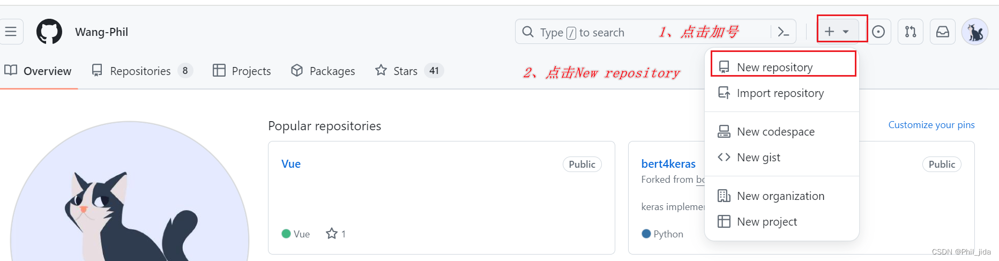
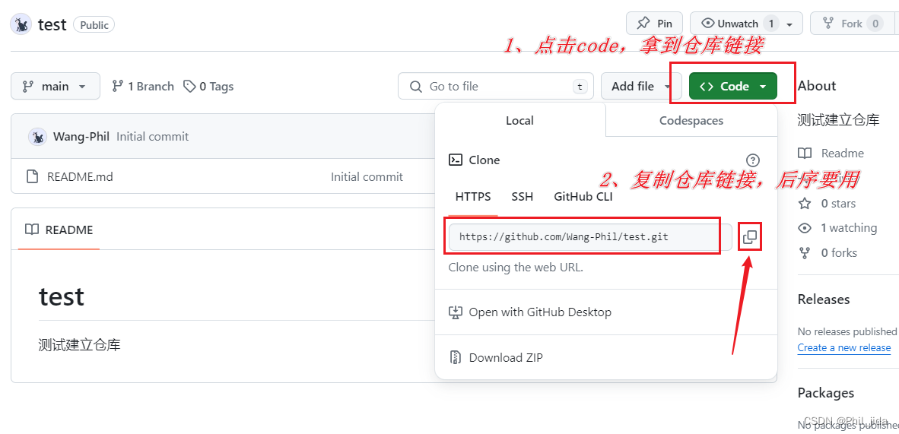
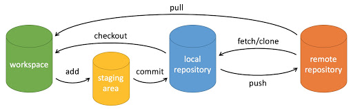
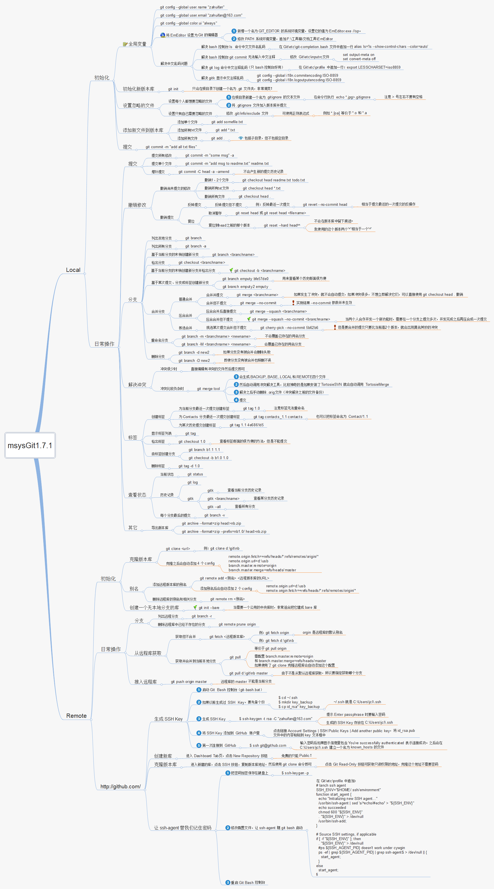
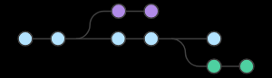
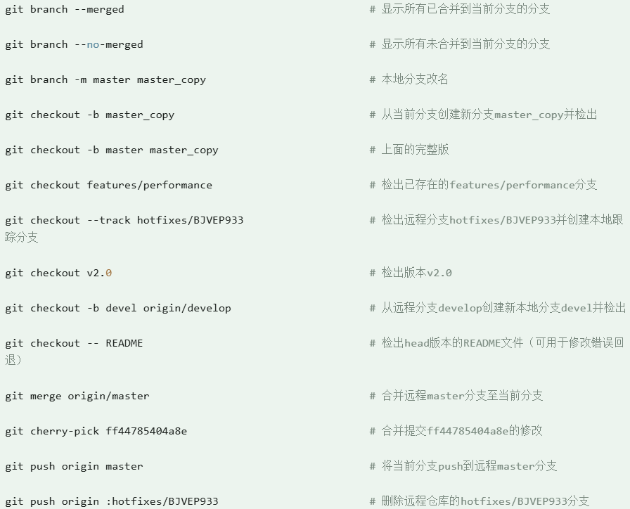
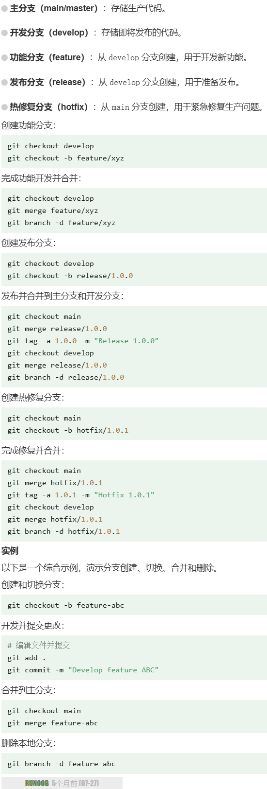
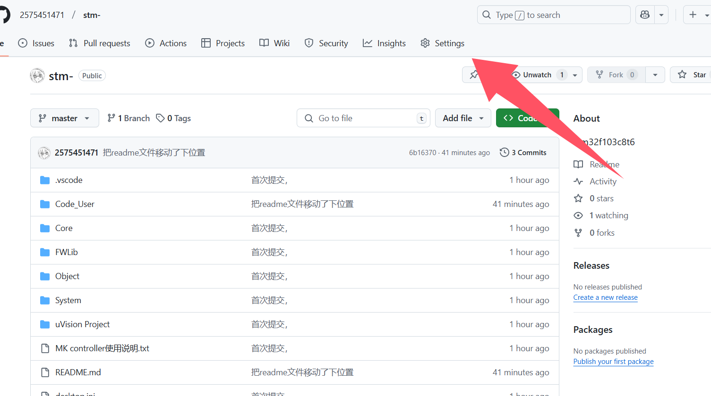
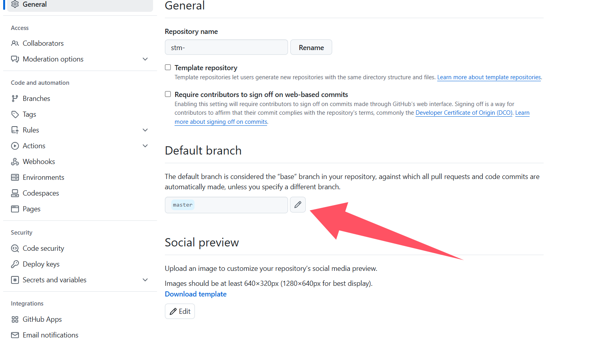

# 简介
git是一个开源的分布式版本控制系统
Git 不仅仅是一个简单的版本控制系统，更是一个内容管理系统（CMS）、工作管理系统等。
实现流程
在github上创建仓库

)（添加仓库名、仓库描述、公开/私人、添加README.md）)
（复制仓库链接地址）

)在VScode中克隆仓库
- 打开想拉取仓库的文件夹位置（在vscode中）
- 打开终端（Terminal）
- 输入命令：
git clone +仓库链接地址
git clone https://github.com/2575451471/modei.git拉取的相关命令
- git init：该命令用于在当前目录中初始化一个新的Git仓库。它会创建一个名为.git的隐藏文件夹，用于存储Git仓库的相关信息。
- git add README.md：该命令将名为”README.md”的文件添加到Git的暂存区。暂存区是Git用来跟踪文件更改的一个中间区域。
- git config —global user.email “you@example.com”：该命令用于设置Git的全局配置，其中user.email是你的邮箱地址。这个配置将与你的提交记录相关联。
- git config —global user.name “Your Name”：该命令用于设置Git的全局配置，其中user.name是你的用户名。这个配置将与你的提交记录相关联。
- git commit -m “first commit”：该命令用于将暂存区中的文件提交到Git仓库。-m选项后面的内容是提交的描述信息，用于解释本次提交的目的。
- git branch -M main：该命令用于重命名当前分支。这里将当前分支重命名为”main”，这是GitHub默认的主分支名称。
- git remote add origin https://github.com/Wang-Phil/test.git：该命令用于将本地仓库与远程GitHub仓库关联起来。origin是远程仓库的别名，https://github.com/Wang-Phil/test.git是远程仓库的URL。
- git push -u origin main：该命令用于将本地仓库的内容推送到远程GitHub仓库。-u选项表示将本地的”main”分支与远程仓库的”main”分支关联起来。这样，在以后的推送中，你只需要运行git push命令即可。
一些vscode表示
会看到“源代码管理”图标上有数字显示（表示有多少个文件发生变化）
- “M”代表已经在GitHub中添加过该文件，然后修改了文件内容；
- “U”代表在本地新建了该文件，还未提交到GitHub
- “D”代表删除了该文件
未跟踪（Untracked）： 新创建的文件最初是未跟踪的。它们存在于工作目录中，但没有被 Git 跟踪。
touch newfile.txt # 创建一个新文件
git status # 查看状态，显示 newfile.txt 未跟踪已跟踪（Tracked）： 通过 git add 命令将未跟踪的文件添加到暂存区后，文件变为已跟踪状态。
git add newfile.txt # 添加文件到暂存区
git status # 查看状态，显示 newfile.txt 在暂存区已修改（Modified）： 对已跟踪的文件进行更改后，这些更改会显示为已修改状态，但这些更改还未添加到暂存区。
echo "Hello, World!" > newfile.txt # 修改文件
git status # 查看状态，显示 newfile.txt 已修改已暂存（Staged）： 使用 git add 命令将修改过的文件添加到暂存区后，文件进入已暂存状态，等待提交。
git add newfile.txt # 添加文件到暂存区
git status # 查看状态，显示 newfile.txt 已暂存已提交（Committed）： 使用 git commit 命令将暂存区的更改提交到本地仓库后，这些更改被记录下来，文件状态返回为已跟踪状态。
git commit -m "Added newfile.txt" # 提交更改
git status # 查看状态，工作目录干净git文件状态
Git 的文件状态分为三种：工作目录（Working Directory）、暂存区（Staging Area）、本地仓库（Local Repository）。了解这些概念及其交互方式是掌握 Git 的关键。
工作目录
工作目录是你在本地计算机上看到的项目文件。它是你实际操作文件的地方，包括查看、编辑、删除和创建文件。所有对文件的更改首先发生在工作目录中。
在工作目录中的文件可能有以下几种状态：
- 未跟踪（Untracked）：新创建的文件，未被 Git 记录。
- 已修改（Modified）：已被 Git 跟踪的文件发生了更改，但这些更改还没有被提交到 Git 记录中。
暂存区
暂存区，也称为索引（Index），是一个临时存储区域，用于保存即将提交到本地仓库的更改。你可以选择性地将工作目录中的更改添加到暂存区中，这样你可以一次提交多个文件的更改，而不必提交所有文件的更改。
- 使用 git add
命令将文件从工作目录添加到暂存区。 - 使用 git add . 命令将当前目录下的所有更改添加到暂存区。
git add <filename> # 添加指定文件到暂存区
git add . # 添加所有更改到暂存区本地仓库
本地仓库是一个隐藏在 .git 目录中的数据库，用于存储项目的所有提交历史记录。每次你提交更改时，Git 会将暂存区中的内容保存到本地仓库中。
git commit -m "commit message" # 提交暂存区的更改到本地仓库git基本操作命令

)workspace：工作区
staging area：暂存区/缓存区
local repository：版本库或本地仓库
remote repository：远程仓库

)创建仓库命令
| 命令 | 说明 |
|---|---|
| git init | 初始化仓库 |
| git clone | 拷贝一份远程仓库，也就是下载一个项目 |
提交与修改
下表列出了有关创建与提交你的项目的快照的命令：
| 命令 | 说明 |
|---|---|
| git add | 添加文件到暂存区 |
| git status | 查看仓库当前的状态，显示有变更的文件。 |
| git diff | 比较文件的不同，即暂存区和工作区的差异。 |
| git difftool | 使用外部差异工具查看和比较文件的更改。 |
| git range-diff | 比较两个提交范围之间的差异。 |
| git commit | 提交暂存区到本地仓库。 |
| git reset | 回退版本。 |
| git rm | 将文件从暂存区和工作区中删除。 |
| git mv | 移动或重命名工作区文件。 |
| git notes | 添加注释。 |
| git checkout | 分支切换。 |
| git switch | （Git 2.23 版本引入） 更清晰地切换分支。 |
| git restore | （Git 2.23 版本引入） 恢复或撤销文件的更改。 |
| git show | 显示 Git 对象的详细信息。 |
提交日志
| 命令 | 说明 |
|---|---|
| git log | 查看历史提交记录 |
| git blame | 以列表形式查看指定文件的历史修改记录 |
| git shortlog | 生成简洁的提交日志摘要 |
| git describe | 生成一个可读的字符串，该字符串基于 Git 的标签系统来描述当前的提交 |
远程操作
| 命令 | 说明 |
|---|---|
| git remote | 远程仓库操作 |
| git fetch | 从远程获取代码库 |
| git pull | 下载远程代码并合并 |
| git push | 上传远程代码并合并 |
| git push —set-upstream origin test1 | 上传并连接分支上游 |
| git submodule | 管理包含其他 Git 仓库的项目 |
git分支管理
使用分支意味着你可以从开发主线上分离开来，然后在不影响主线的同时继续工作。

)Git 分支实际上是指向更改快照的指针。
| 头 | 头 |
|---|---|
| 创建新分支 | git checkout -b <branchname> |
| 创建新分支举例 | git checkout -b feature-xyz |
| 切换分支命令 | git checkout (branchname) |
| 切换分支命令举例 | git checkout main1 |
| 查看所有分支 | git branch |
| 查看远程分支 | git branch -r |
| 查看所有分支（本地和远程） | git branch -a |
| 将其他分支合并到当前分支 | git merge <branchname> |
| 举例:切换到 main 分支并合并 feature-xyz 分支 | git git checkout main&&git merge feature-xyz |
| 删除本地分支 | git branch -d <branchname> |
| 删除远程分支 | git push origin — delete <branchname> |
| 强制删除未合并的分支 | git branch -D <branchname> |
| 列出分支 | git branch |
| 手动创建分支 | git branch (branchname) |
一旦某分支有了独立内容，你终究会希望将它合并回到你的主分支。 你可以使用以下命令将任何分支合并到当前分支中去：git merge
假设主分支main里面没有删除text1
进入新分支branch1里面删除了text1文件
合并branch1分支到main主分支：git merge branch1 (在main主分支处处理)
以上实例中我们将 newtest 分支合并到主分支去，test.txt 文件被删除。
合并完后删除分支branch1：git branch -d branch1

)
)git查看提交历史
ing
git标签
ing
git flow
ing
git 进阶
ing
git github
ing
git 服务器搭建
ing
git实操
demo项目
- 首先在github上创建了一个远程库
- 然后在本地的原项目里面初始化git
- (git remote remove origin //可以断开关联的远程库)
- git remote add origin https://github.com/2575451471/stm-.git //关联远程库
>git push
fatal: The current branch master has no upstream branch.
To push the current branch and set the remote as upstream, use
git push --set-upstream origin master
(这里提示当前分支master没有上游分支，要推送当前分支并设置远程为上游用“git push --set-upstream origin master”)
(我猜测是因为github的初始化branch名是main,而本地是master,所以找不到master分支的远程上游)-
git push —set-upstream origin master（听从，推送当前分支并设置远程为上游,此时远程会创建一个origin/master分支）
此时远程就有了两个分支，origin/main和origin/master -
这个时候我想删除远程分支 origin/main
-
首先必须在github上面修改默认分支（因为git首先创建main为默认分支，）

)

)
- 要先用命令查看远程分支 git branch -r
一开始只显示了
origin/master
本地和远程没有同步
使用git fetch origin (将远程仓库中所有分支的最新提交记录下载到本地的 .git 目录中，并更新你的远程跟踪分支)
然后再查看远程分支 git branch -r
origin/main
origin/master
- 删除远程分支 git push origin —delete main
综上所述：
github创建远程库 本地初始化git(此处分支最好和远程分支同名) git init
我这次由于没有同名 将本地工程同步 git add . git commit -m “init” 关联远程库 git remote add origin https://github.com/2575451471/stm-.git 创建并连接本地master的远程上游origin/master: git push —set-upstream origin master 同步远程库分支信息 git fetch origin 在github上修改默认分支为master 删除远程分支 git push origin —delete main
git报错
git push报错：fatal: unable to access ‘https://github.com/……
git config --global http.proxy
git config --global --unset http.proxy
git config --global http.sslVerify "false"查询并且取消代理设置，并且关闭ssl验证。